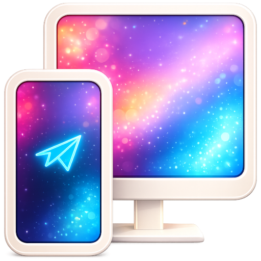
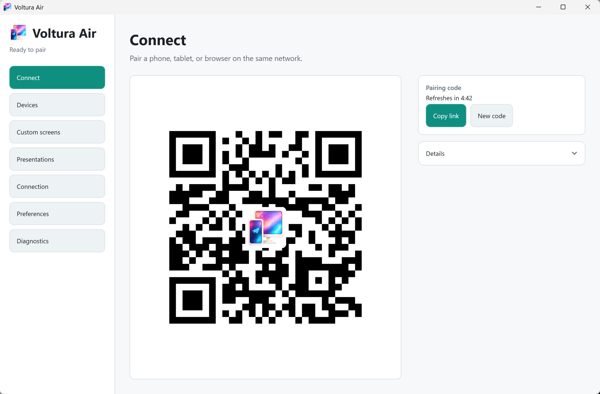
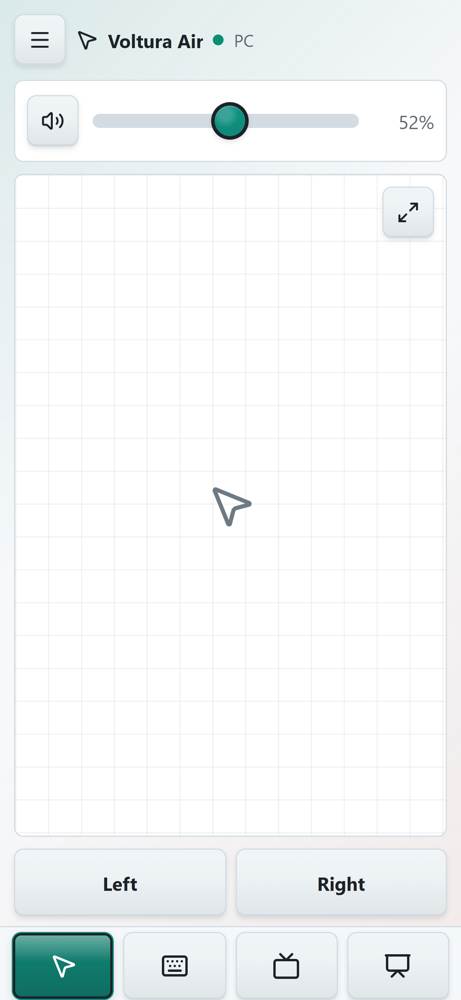
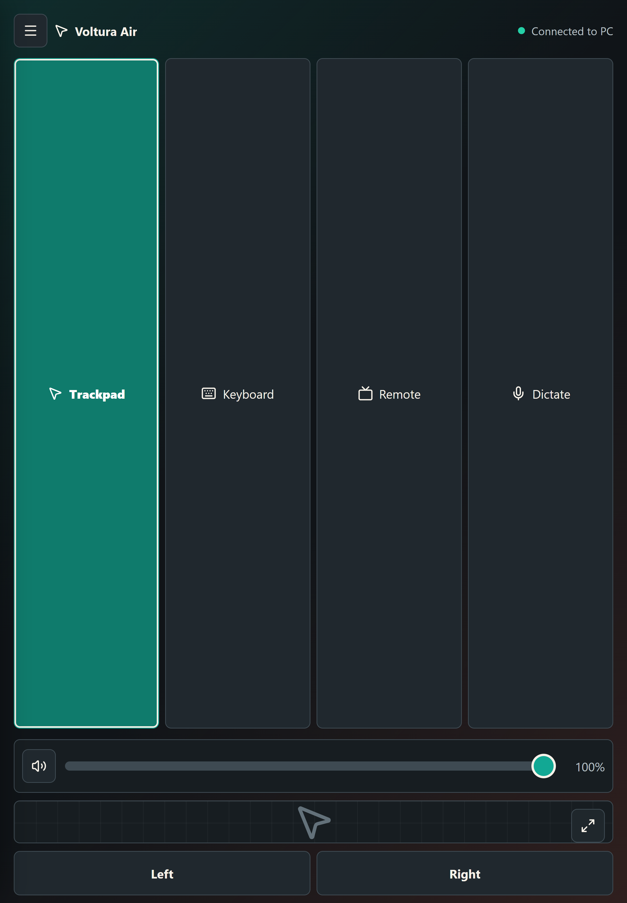

Wireless trackpad
Move the pointer, tap to click, use left and right buttons, scroll with two fingers, pinch to zoom, and expand the surface when you want more room.

Voltura AirFree Windows tray app and mobile PWA
Control your PC from the sofa.
Use your phone or tablet as a wireless trackpad, keyboard, dictation input, and media controller for your PC. Voltura Air is freeware from Voltura AB.
Move the pointer, tap to click, use left and right buttons, scroll with two fingers, pinch to zoom, and expand the surface when you want more room.
Type live into Windows, send buffered text, use editing and navigation keys, enable function keys, and dictate when your browser supports speech recognition.
Adjust PC volume, pair securely on the local network, reconnect saved devices, and choose light, dark, or system appearance on both host and client.
Screens



Setup
Privacy
Voltura Air is LAN-only. The Windows host serves the mobile app directly to devices on your local network, and input messages are sent to the paired PC over a local WebSocket connection. There is no account system, cloud relay, or internet input forwarding.
Freeware
Voltura Air can be used without payment, account registration, trial limits, or feature locks. If it helps you, optional donations help support continued development.
Download
Download the latest VolturaAir-Setup-<version>-win-x64.exe from GitHub releases. The installer runs per user and does not require administrator rights.
Early builds are not code-signed yet, so Windows may show an unknown publisher or Microsoft Defender SmartScreen warning. Download only from this page or the official GitHub releases page.